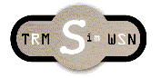
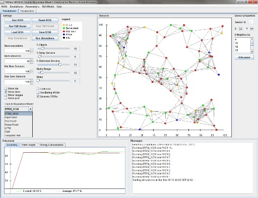

TRMSim-WSN Help

Introduction
TRMSim-WSN (Trust and Reputation Models Simulator for Wireless Sensor
Networks) is a Java-based simulator aimed to test Trust and Reputation
models for WSNs.
It provides several Trust and Reputation models and new ones can be
easily added.
It allows researchers to test and compare their trust and reputation models
against a wide range of WSNs. They can decide whether they want static or dynamic
networks, the percentage of fraudulent nodes, the percentage of nodes acting
as clients or servers, etc.
It has been designed to easily adapt and integrate a new model within the simulator.
Only a few classes have to be implemented in order to carry out this task.

Go back to main menu
TRMSim-WSN User's Guide
Two documents can be consulted for learning how to use the simulator and how to implement and include a new trust and/or reputation model in TRMSim-WSN:
Go back to main menu
Javadoc
Go back to main menu
Known bugs
and enhancements for future versions
Next are shown some known bugs or deficiencies about TRMSim-WSN:
- Currently there is no known bug. Please if you find any, consider reporting it at felixgm@um.es.
Additionally, some proposed enhancements for future versions are:
- Improve the developed fuzzy logic library by adding new functionality
- Enhance the 'Sensor properties' panel in order to customize networks,
adding and removing sensors, changing its features (provided services,
goodness, location, range...)
- Shrink outcomes panels' content to better fit within the specified frame,
leaving some outer margins
- Allow to export the outcomes obtained in one simulation to several formats
(Excel, gnuplot, etc.)
- Run several trust and reputation models in parallel, in order to perform
an easier comparison of their respective outcomes
- Implement several mobility patterns for the sensors
Go back to main menu
Versions log
- TRMSim-WSN 0.1 (beta)
- TRMSim-WSN 0.1
- Some bugs when loading and saving WSNs have been solved
- Help window and About window have been added
- A menu bar has been added
- Javadoc has been completed
- An exception when radio range is equal to 0 (zero) has been handled
- TRMSim-WSN 0.2
- Two new Trust and Reputation Models have been added: PeerTrust and EigenTrust
- The generic API for implementing new Trust and Reputation models have been modified and improved
- Outcomes panels have been enhanced with graphic plots
- An energy consumption module has been added, with its corresponding results panel
- Parameters panels have been improved
- A Windows installer of the simulator has been developed
- TRMSim-WSN 0.3
- A new reputation model has been incorporated: PowerTrust
- The simulator has been modified to automatically detect new trust and reputation models implementations by just placing the appropriate classes in the corresponding folders
- A Template trust and reputation model classes have developed and integrated in the simulator to guide researchers to implement their own models
- A manual describing the steps to be followed in order to implement and integrate a new trust and reputation model in the simulator has been written
- TRMSim-WSN 0.3.1
- Some bugs were fixed
- Hyperlinks functionality in this help has been improved
- TRMSim-WSN 0.4
- Some bugs were fixed
- A new reputation model has been incorporated: LFTM
- A fuzzy logic library has been developed and included
- Outcomes panels have been improved
- Network panels have been improved
- Legend panels have been improved
- Api2d library is no longer used and needed
- Parameters file content panel has been added
- TRMSim-WSN 0.5
- Some bugs were fixed
- A new reputation model has been incorporated: TRIP
- The main window has been divided into resizable and scrollable panels (both in the simulation and in the parameters tab)
- All panels have been labeled
- A new menu for selecting the current TRM has been added
- A new hidden panel entitled 'Sensor properties' has been added (it appears when clicking on a sensor)
- A bug with dynamic networks has been solved
- Axes and optional grid have been added to the network panel
- Some typos in javadoc have been corrected
Go back to main menu
Implemented T&R models
Current version of TRMSim-WSN implements the following Trust and Reputation models:
- BTRM-WSN
- Gómez Mármol, F. and Martínez Pérez, G.,
"Providing Trust in Wireless Sensor Networks using a
Bio-inspired Technique",Telecommunication Systems Journal,
vol. 46, no. 2, pp. 163-180, 2011
- PeerTrust
- Xiong, L. and Liu, L., "PeerTrust: Supporting
Reputation-Based Trust in Peer-to-Peer Communities",
IEEE Transactions on Knowledge and Data Engineering, vol. 16, no. 7,
pp. 843-857, 2004
- EigenTrust
- Kamvar, S., Schlosser, M. and Garcia-Molina, H., "The
EigenTrust Algorithm for Reputation Management in P2P Networks",
WWW03: Proceedings of the 12th international conference on World Wide
Web, pp. 640-651, 2003
- PowerTrust
- Zhou, R. and Hwang, K., "PowerTrust: A Robust and Scalable
Reputation System for Trusted Peer-to-Peer Computing",
IEEE Transactions on Parallel and Distributed Systems, vol 18, no. 4,
pp. 460-473, 2007
- LFTM
- Gómez Mármol, F., Gómez Marín-Blázquez,
J. and Martínez Pérez, G., "LFTM, Linguistic
Fuzzy Trust Mechanism for distributed networks",
Concurrency and Computation: Practice & Experience, 2012
- TRIP
- Gómez Mármol, F. and Martínez Pérez, G.,
"TRIP, a Trust and Reputation Infrastructure-based
Proposal for Vehicular Ad-hoc Networks",
Journal of Network and Computer Applications, vol. 35, no. 3,
pp. 934-941, 2012
Go back to main menu
Acknowledgements
I would like to thank some people and institutions for their help and support:
- My advisor, Gregorio Martínez
Pérez
- Séneca Foundation
- Antonio Bernárdez Álvarez, who collaborated with the project
- José David Morales García, who collaborated with the project
- Hamed Khiabani, who collaborated with the project
Go back to main menu
About TRMSim-WSN
TRMSim-WSN has been designed and implemented by Félix
Gómez Mármol (felixgm@um.es),
at the Department of Information and Communication Engineering,
University of Murcia (Spain).
In order to check for a new version of TRMSim-WSN, notify found
errors, ask questions or suggest new changes and features, please visit
http://ants.dif.um.es/~felixgm/research/trmsim-wsn
TRMSim-WSN 2012, all rights reserved
For further information, please check the next reference:
- Gómez Mármol, F. and Martínez Pérez, G.,
"TRMSim-WSN, Trust and Reputation Models Simulator for
Wireless Sensor Networks", IEEE International Conference on
Communications (IEEE ICC 2009), Communication and Information Systems
Security Symposium, Dresden, Germany, 14-18 June 2009
Go back to main menu